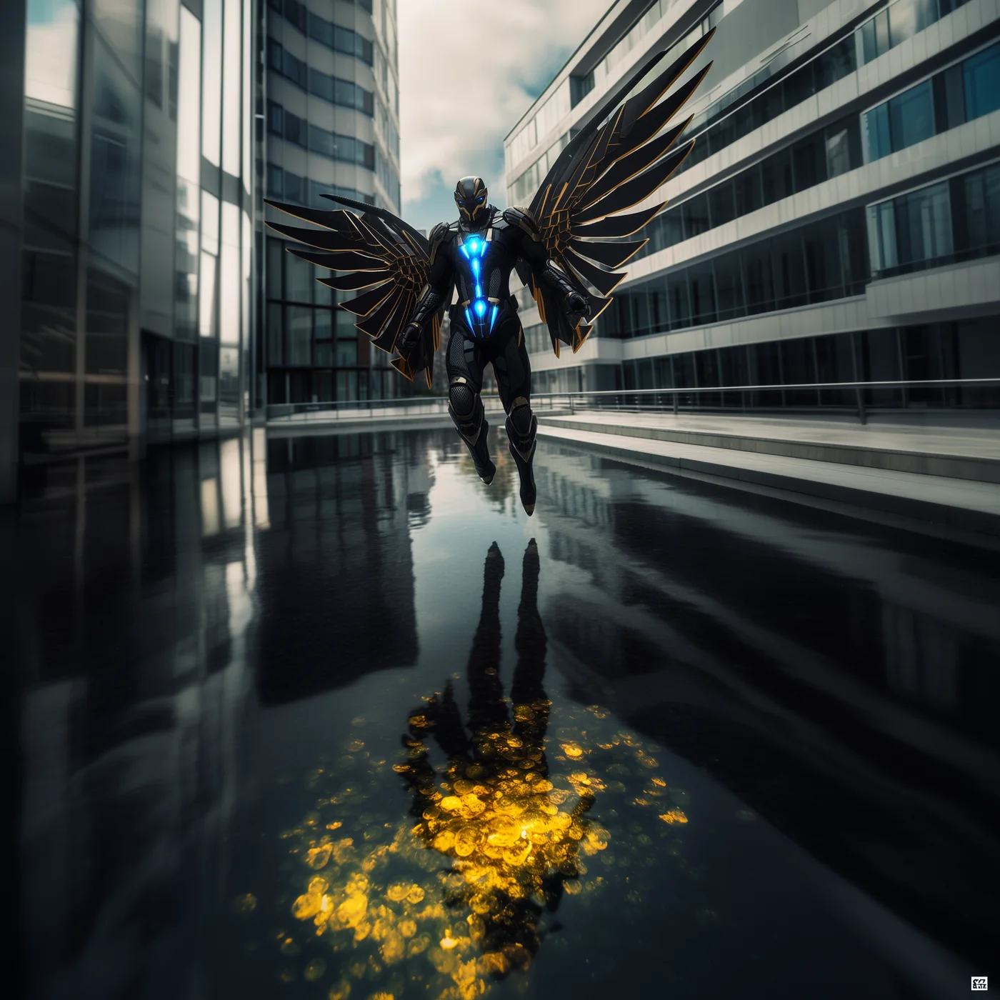

©
©
GENEZYS ARCHIVE · Earth 1 · Legionnaire
Joril
Aurora Duelist

Archive record
Joril trains under the polar sky, matching every jab to the rhythm of the aurora. Shields only make the Starline Jab hit harder, because the brightest light always finds the smallest gap. Joril swears that on the night the Beacon is lit, the aurora will answer too.
Combat signature
Starline Jab
210 Cosmara
120 Animus
180 Vitalis
Surges sunlit firestorm: Reduces the target's Cosmara by 100. If the target's shield is ON, reduce an additional 30. Deals 50 damage.
Genezys 01:03 ™&©2026LEGIONS
Return to LEGIONS